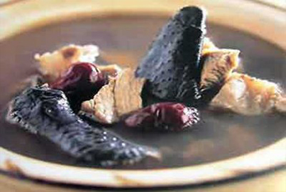
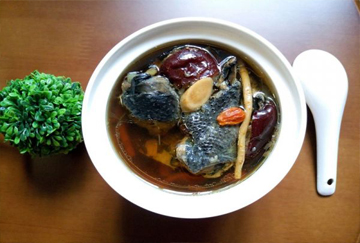

乌鸡汤
乌鸡汤是广东省传统的地方名菜，以乌鸡、阿胶、黄精、桂圆、红枣、枸杞等食材制作而成。乌鸡营养丰富，并含有激素和紫色素，对人体白血球和血色素有增强的作用。乌鸡汤属于粤菜，有着悠久的历史，以特有的菜式和韵味，独树一帜，粤菜是中国著名八大菜系之一，在国内外享有盛誉。粤菜的主要性格为:取之自然，烹之自由 ，食之自在!粤菜广义上来说由广州菜(亦称广府菜)、潮州菜(亦称"潮汕菜")、东江菜(属客家菜)组成，以广州菜作为代表。
主料:乌骨鸡500克，辅料:陈皮3克，高良姜3克，草果5克，调料:大葱10克，醋5克，胡椒6克，制作步骤：1、将雄乌骨鸡洗净切块，大葱切段。2、与陈皮、高良姜 、草果、胡椒、大葱段、醋，同煮，文火炖烂。
乌鸡汤:具有养肝、滋阴、补血养颜、益精明目的作用。尤其对体虚血亏、肝肾不足、脾胃不健，产妇、手术后恢复身体的人效果更佳。


版权所有：舌尖上的美食网